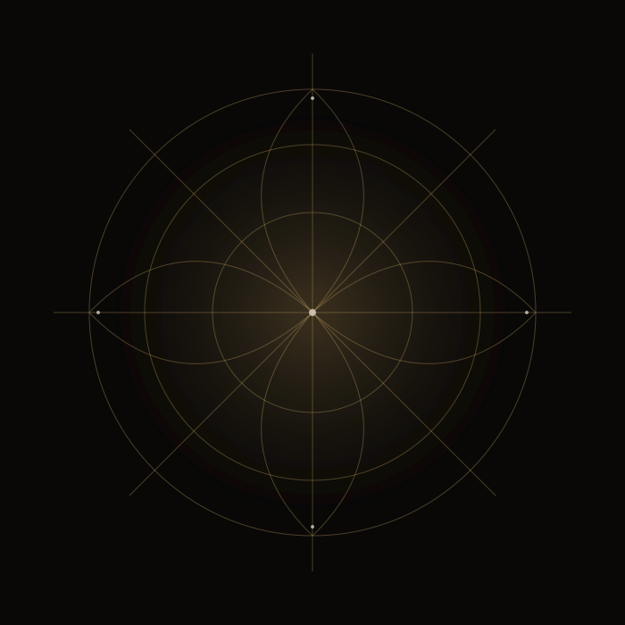

Latest Kalam
Tujhy Dekhne K Baad ﷺ
Explore devotional Kalam and spiritual poetry shared through the Qalb e Mast channel.
Explore the video library →Where the Heart Finds Peace.
Explore Sufi Kalam, Urdu and Punjabi spiritual poetry, devotional listening and reflective writing in a calm, carefully presented space.

Explore Sufi history, spiritual practices, poetry and devotional media in one place.
Explore devotional Kalam and spiritual poetry shared through the Qalb e Mast channel.
Explore the video library →Learn the vocabulary of the tradition, read the poetry that shaped cultures, and approach spiritual practices with context and humility.
Walk the timelineDefinitions, history and philosophy.
Zikr, muraqabah, muhasabah and sama.
Kalam, poetry and spiritual reminders.
Stories and essays for the heart.